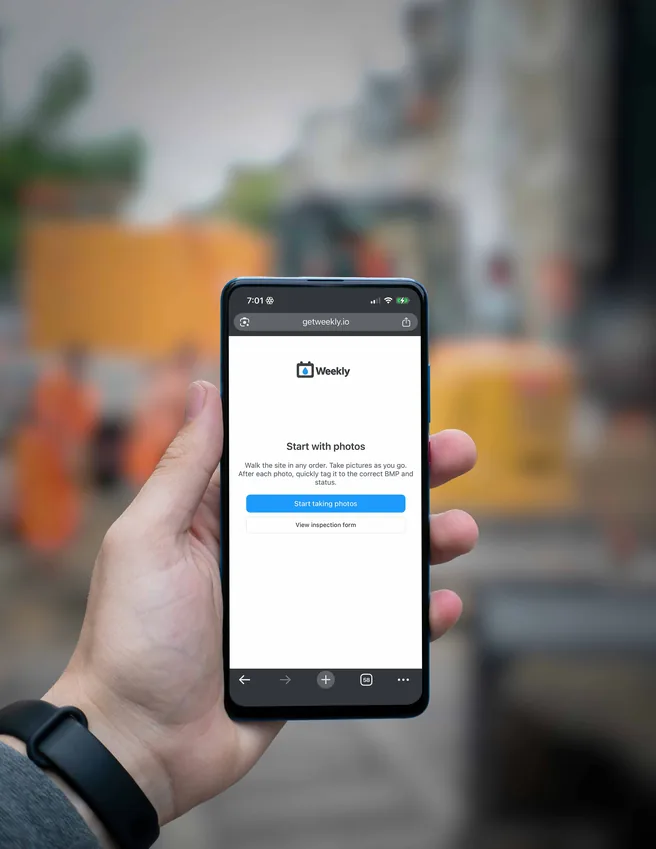

Mobile-optimized inspection app
Inspectors can create inspection forms faster than ever using our patent-pending "photo-first flow" technology. Walk the site in any order, taking pictures and tagging as you go.
No more sitting in the truck or office trying to remember which pictures go where. The app utilizes GPS tracking to geotag photos, and even detects if you're near a project site with a prompt to start a new inspection.